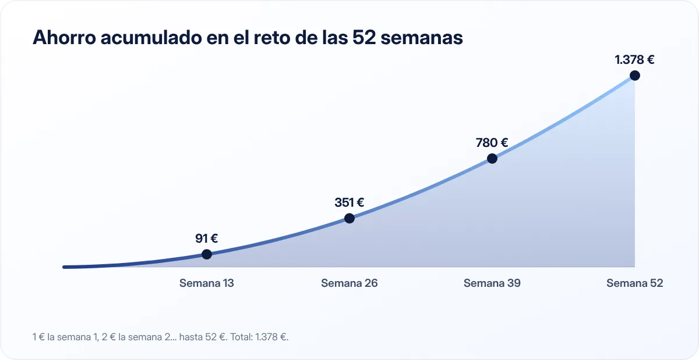

El reto de las 52 semanas: cómo ahorrar 1.378 € en un año sin darte cuenta
Un reto sencillo y casi un juego: cada semana ahorras un poco más que la anterior. Al terminar el año tienes un buen colchón y, sobre todo, un hábito.

Puntos clave
- Semana 1: ahorras 1 €; semana 2: 2 €… hasta la semana 52: 52 €.
- Total al final del año: 1.378 €.
- La versión inversa (empezar por 52 €) es más fácil de mantener al final del año, cuando llegan los gastos de Navidad.
Cómo funciona
La regla es muy simple: cada semana guardas tantos euros como el número de la semana.
- Semana 1: 1 €
- Semana 2: 2 €
- Semana 3: 3 €
- …
- Semana 52: 52 €
Si sumas todas las semanas (1 + 2 + 3 + … + 52), el resultado es 1.378 €. Al principio apenas lo notas, y cuando las cantidades empiezan a crecer ya has creado el hábito.
Cuánto llevarás ahorrado en cada momento

| Al final de la semana | Ahorro de esa semana | Total acumulado |
|---|---|---|
| 13 (≈ 3 meses) | 13 € | 91 € |
| 26 (≈ 6 meses) | 26 € | 351 € |
| 39 (≈ 9 meses) | 39 € | 780 € |
| 52 (1 año) | 52 € | 1.378 € |
Como ves, más de la mitad del ahorro se concentra en el último trimestre. Por eso conviene conocer las variantes.
Variantes del reto
Reto inverso
Empiezas en la semana 1 con 52 € y vas bajando hasta 1 € en la última. El total es el mismo, 1.378 €, pero el esfuerzo grande está al principio, cuando tienes más motivación, y el final del año coincide con las cantidades más pequeñas, justo cuando llegan los gastos de Navidad.
Reto adaptado: elige la casilla
Haz una tabla con los números del 1 al 52. Cada semana tachas el número que mejor te venga: si es una semana con gastos, tachas el 4; si cobras algo extra, tachas el 50. Al final del año habrás tachado todos y ahorrado lo mismo.
Reto doble o múltiple
Si 1.378 € se te queda corto, multiplica: con el reto doble (2 €, 4 €, 6 €…) llegas a 2.756 €. Con el triple, a 4.134 €.
Reto mensual de 12 meses
Para quien prefiere pensar en meses: 1.º mes 50 €, 2.º 100 €, 3.º 150 €… hasta 600 € en el duodécimo. El total sería 3.900 €. Es más exigente; adapta las cantidades a tu presupuesto.
Trucos para no abandonar
Automatízalo
Programa una transferencia semanal a una cuenta de ahorro separada. Si tu banco no permite cantidades crecientes, programa transferencias mensuales con la suma de las cuatro o cinco semanas de cada mes.
Hazlo visible
Imprime una tabla y táchala cada semana, o usa una hucha transparente si lo haces con efectivo. Ver el progreso motiva.
Usa una cuenta distinta
Si el dinero del reto se queda en tu cuenta habitual, acabará gastándose. Una cuenta remunerada aparte también te dará algo de interés. Lo explicamos en cuenta remunerada o depósito.
Busca un compañero
Hacer el reto con tu pareja, un amigo o un familiar convierte el ahorro en algo compartido y más divertido.
Si fallas una semana, no lo dejes
Recupera la cantidad la semana siguiente o pásate a la versión adaptada. Lo importante es terminar el año con el hábito, aunque no llegues a la cifra exacta.
El valor del reto no son los 1.378 €. Es demostrarte que puedes ahorrar cada semana, durante un año entero, sin que cambie tu forma de vivir.
¿Qué hacer con el dinero al terminar?
Tienes varias opciones, según tu situación:
- Empezar o completar tu fondo de emergencia, si todavía no lo tienes.
- Pagar una deuda cara, siguiendo los métodos de bola de nieve o avalancha.
- Cubrir gastos anuales como el seguro del coche o el IBI, para que no desequilibren tu presupuesto mensual.
- Empezar a invertir a largo plazo, si ya tienes lo anterior resuelto y entiendes los riesgos.
¿Es para ti?
El reto de las 52 semanas es ideal si te cuesta ahorrar, si nunca has tenido el hábito o si quieres una forma sencilla de empezar. Si ya ahorras un porcentaje fijo de tu sueldo con la regla 50/30/20, puedes usarlo como un extra para un objetivo concreto.
En resumen
Ahorra cada semana una cantidad creciente (o decreciente, en la versión inversa) y llegarás a 1.378 € en un año. Automatízalo, sepáralo en otra cuenta y no lo abandones por fallar una semana.
Fuentes consultadas
Este artículo es informativo y no constituye asesoramiento financiero, fiscal ni jurídico personalizado. Las cifras son orientativas y pueden cambiar; consulta las fuentes oficiales y, si lo necesitas, a un profesional. Cómo elaboramos nuestras guías.